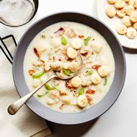

Clam Chowder

Description
"This creamy soup is so delicious, savory, and comforting on a cold
winter day!"
Ingredients
- 2 cups cubed potatoes
- 1 cup diced carrots
- 1 cup diced celery
- 1 cup diced minced onion
- 3 cans minced clams, drained with juice reserved
- water to cover
- 3/4 cup butter
- 3/4 cup all-purpose flour
- 1 quart half-and-half cream
- 2 tablespoons red wine vinegar
- 1 1/2 teaspoons salt
- ground black pepper to taste
Steps
-
Place potatoes, carrots, celery, and onion into a large skillet; pour in
clam juice and add enough water to cover. Cook and stir over medium-low
heat until vegetables are tender.
-
Meanwhile, melt butter in a large, heavy saucepan over medium heat.
Whisk in flour until smooth. Whisk in cream and stir constantly until
thick and smooth. Stir in vegetable mixture with any juices until just
heated through.
-
Stir in clams just before serving to prevent them from overcooking. When
clams are heated through, stir in vinegar and season to taste with salt
and pepper.
Home